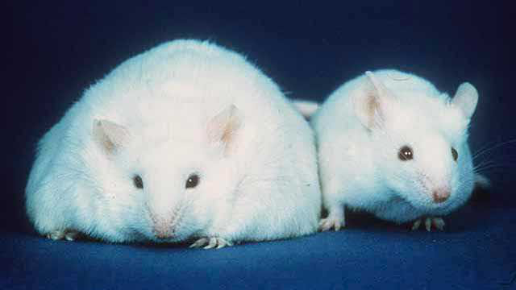

Мікробіом та індекс маси тіла: хто кого?
Які загальні відмінності кишкової мікробіоти людей з різним індексом маси?
Для кишківників стрункіших людей характерно багатше мікробне різноманіття . Переважно це відображає різноманітність харчування: ширший спектр їжі, а, відповідно, і груп мікроорганізмів, що її споживають. Ступінь різноманіття мікробного суспільства відображає його стійкість до різних катаклізмів, наприклад, харчових отруєнь та інфекцій.
Існує чимало даних стосовно зв'язку маси тіла та співвідношенням кількості бактероїдів і фірмік****ут. Наразі переважна більшість досліджень каже, що чим більше фірмікут, і менше бактероїдів, тим ймовірніші проблеми із зайвою масою . Однак існують й інші дослідження (їх порівняно небагато), які стверджують протилежне,чи взагалі вказують на відсутністьтакого зв'язку.
Також чимало дослідників відмічають більшу кількість біфідобактерій та Lactobacillus plantarum у стрункіших людей , тоді як такі рідко згадувані Christensenellaceae були частішими резидентами у кишківниках огрядніших учасників.
Яким чином мікробіота кишківника може впливати на ступінь набору маси?
Цікаво, що у людей з різним індексом масиефективність засвоєння їжі – різна . І це безпосередньо залежить від нашої мікробіоти. У дослідженнях показано, що при споживанні надмірної кількості їжі стрункішими учасниками експериментів енергетична ефективність її засвоєння була менша, на відміну від володарів більших розмірів одягу.
Про темну сторону коротколанцюгових жирних кислот
Відомо, що близько 10% нашого енергетичного запасу ми отримуємо за рахунок перетравлювання нашими бактеріями клітковини. Внаслідок цього утворюються коротколанцюгові жирні кислоти (short‐chain fatty acids, SCFAs), що є важливими сигнальними молекулами та джерелом енергії як для кишкового епітелію, так і для печінки та периферичних тканин. У деяких дослідженнях показано, що у пацієнтів із ожирінням фіксувалися підвищені значення SCFAs, з чого роблять припущення, що саме ось цей енергетичний бонус може здійснювати вклад у набір маси. Тобто, ці такі чудові і корисні коротколанцюгові жирні кислоти також цілком успішно можуть використовуватися як субстрат для синтезу... ліпідів. Таким чином, частка ферментованої клітковини та можлива енергетична вигода, яку можна "витягнути" із спожитої їжі великою мірою залежить від "умінь" нашого кишкового товариства та ще трохи від почуття гумору нашого метаболізму. Простіше кажучи, з'ївши тарілку каші, ми всі отримуємо з неї різну кількість калорій.
Про баги "розумного решета"
Проникність кишкового бар'єру і його вибірковість – штука не стала. Нам потрібно якось висмоктувати із вмісту кишківника поживні речовини, воду, вітаміни, мікроелементи, але не набратися чогось зайвого і надміру. Мікробні метаболіти, та навіть самі мікроби можуть долати кишковий бар'єр та проникати у кров. Коли ця "прикордонна служба" лажає і пропускає надмірну кількість мікробних ліпополісахаридів (це компоненти клітинних стінок грам-негативних бактерій, наприклад, таких, як кишкова паличка), то у відповідь на це наша імунна система реагує розвитком стану хронічного запалення , що є невід'ємною складовою розвитку ожиріння та діабету другого типу . Тригером до цього може статистрес. Він спричинює підвищення тих самих запальних маркерів у крові і спричинює збої того "розумного решета" – випускаючи із кишківника молекули ліпополісахариду, та ще більше сприяючи загальному запаленню та розвитку запальних процесів кишківника.
Про ігри розуму
Мікробні метаболіти взаємодіють із нашою нервовою системою , та впливають на продукцію гормонів. Серед них – гормони, що ідентифікують наше відчуття ситості чи голоду . Це вже трохи схоже на сценарій якогось страшного фільму – у одних із досліджень, опублікованих в Nature в 2016 показано, що при годуванні піддослідних пацюків жирною їжею, їх мікробіота продукувала багато ацетату. Він взаємодіяв із парасимпатичною нервовою системою та підвищував ... рівень греліну (того самого гормону, що змушує нас відчувати голод). У бідних тварин зривало дах, вони їли ще більше, товстішали, в них розвивалася інсулінорезистентність та метаболічний синдром.
Здається, що відповідь на багато філософських питань є прямо у цих результатах. Якщо Ви їсте багато жирного і Вам постійно хочеться ще, можливо, варто замислитися...
Про жовчне колесо фортуни
Частина нашого мікробного братства спритно ферментує жовчні кислоти. Чим більше жовчі ферментується , тим менше її повертається назад у кровоток та може бути використано знову . І тим більше енергетичної валюти, яка могла б засісти в наших боках, йде на синтез нової жовчі. Якщо ж "братчиків", які уміють ферментувати жовч, недостатньо, позбутися зайвих калорій у такий спосіб не вдається. Окрім такого доволі прямого впливу на "зливання" зайвого калоражу, є ще й інші, наприклад, через FXR сигналінг (при цьому продукти мікробної ферментації жовчних кислот взаємодіють із FXR-рецепторами та сприяють вивільненню FGF-19 (фактор росту фібробластів), який регулює не лише синтез жовчних кислот, а й ліпідний та глюкозний метаболізм).
А тепер про приземлене і практичне питання, яке цікавить багатьох.
Чи існуватиме суперпігулка?
Ймовірно. І дорого. Чесно – дешевше просто їсти менше і якісніше, якщо справа просто у надмірному споживанні їжі та недостатній рухливості. Ні, йогурт, ні пігулка не зробить ні з кого струнку сарну, якщо далі лежати на дивані і поглинати їжу, як не сарна.
Але якщо для мотивації не вистачає споживання якихось пігулок по 20 дол за штуку, то чому ні? І чимало засобів саме так і працює! Однак, якщо залишити осторонь деякий скептицизм, спеціальні препарати на основі нових мікробних гравців пробіотичної індустрії можуть стати гарним додатком до протихолестеринової та антидіабетичної терапії, та дещо полегшити шлях до бажаних розмірів.
Наразі дослідження показують, що споживання біфідобактерій зменшувало набір маси, рівень холестерину, кількість протеобактерій, які є джерелом ліпополісахариду, та, відновідно, призводило до зниження рівня маркерів загального запалення у мишей, яких годували їжею із надмірною кількістю жирів.
Існує також чимало досліджень, що демонструють зниження маси тіла при застосуванні пробіотиків із вмістом лактобацил.
Тут важливо згадати, що якщо ми вдаємося до пробіотиків із якоюсь конкретною метою (у даному випадку, для зниження маси тіла), то варто звернути увагу на номери штамів , які містяться у цих конкретних пробіотичних препаратах, та перевірити в наукових джерелах, чи мають відношення до регуляції маси тіла саме ці штами. Про вибір пробіотиків ми детальніше писали тут.
Чимало орендаторів нашого кишківника здійснюють протизапальну дію , що в подальшому має "протикілограмний" ефект та неодмінно буде використано фарміндустрією. Наприклад, родичі клостридій, Faecalibacterium prausnitzii, продукують бутират і таким чиномблокують активацію NF-kB та подальше вивільненння прозапальних цитокінів у клітинах кишківника.
Інший вже відомий, перспективний і розкручений в наукових колах вид мікроорганізмів, на які покладаються в найближчому майбутньому у пекельній боротьбі із ожирінням та інсулінорезистентністю, є вже згаданий вид Akkermansia muciniphila. Він сприяє підтриманню бар'єрної функції кишківника та вже має ряд успішних доказів своєї ефективності при застосуванні для пацієнтів із підвищеним індексом маси тіла.
Одна з останніх на цю тему публікацій демонструє, що щоденне споживання Akkermansia muciniphila у кількості 1010^ КУО протягом трьох місяців знижувала рівень холестерину в крові на приблизно 8%, масу тіла в середньому на 2 кг, об'єм стегон приблизно на 2 см, а також знижувала рівень маркерів запалення.
Однак на горизонті перспектив застосування цих бактерій-супергероїв з'явилися невеличкі "хмарки": деякі дані показують опосередковану залученість A. muciniphila у виникнення розсіяного склерозу.
То що там з з мишками?
Ще в 2013 в Science опубліковано ту саму статтю, в якій від струнких та не струнких донорів взяли зразки кишкового мікробіому і підсадили мишкам-гнотобіонтам. Мишки почали набирати масу, або залишатися стрункими, у залежності від того, чий мікробіом вони отримали. При цьому існувала ще одна модифікація того експерименту, про яку згадують рідше. Через 5 днів, після пересадження мікробіоти, мишок із мікробіотою від струнких та огрядних донорів посадили в одну клітку, і... мишки, які мали погладшати, не погладшали! Експериментатори контролювали кількісні та якісні зміни мікробіомів тварин у клітках і відмітили, що відбулося переселення бактероїдів від <<струнких>> гризунів до <<гладких>>, внаслідок чого вони власне такими не стали. Таким чином, <<стрункий>> мікробіом переміг. В обговоренні також і зазначається, що мишки трохи схильні до копрофагії, тому цілком ймовірно, що вони самі сприяли цьому, просто під'їдаючи фекалії за співкамерниками. Однак, чи справді таке мало місце, дослідники не написали. Зважаючи, що експеримент був проведений на тваринах і ймовірно, що передбачав пожирання фекалій, навряд чи можна з впевненістю інтерпретувати ці результати для людей. Однак підстав переживати, що можна заразитися <<огрядним>> мікробіомом і розповніти, здається, на даний момент, нема. Ймовірніше, що ваші бактероїди мають бути сильніші! Однак, це не має бути підставою їсти лайно. У всіх розуміннях цього слова!
Далі буде :)
